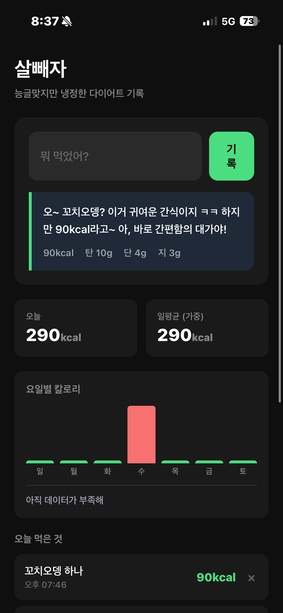
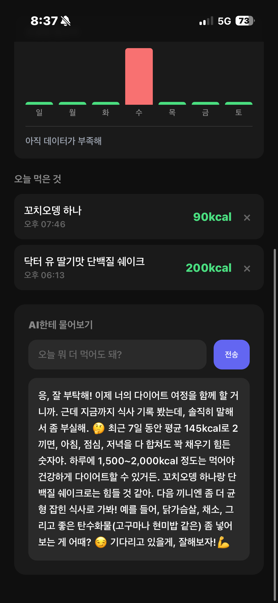

← Apps
살빼자
능글맞지만 냉정한 다이어트 기록 앱


왜 만들었나
다이어트 앱은 많지만, 다 복잡하고 귀찮다.
앱 열고, 음식 검색하고, 양 입력하고... 이러다 포기함.
홈화면에서 한 번 탭 → 뭐 먹었는지 적기 → 끝.
이게 전부여야 한다고 생각했다.
주요 기능
iOS 단축어 연동
홈화면 위젯에서 바로 입력. 앱 안 열어도 됨.
AI 칼로리 추정
"치킨 반마리" 치면 알아서 칼로리 계산.
능글맞은 피드백
"야식 라면? 나트륨 폭탄이야 💀" 팩트는 때림.
가중평균 통계
극단값 제외한 실제 평균. IQR 방식 사용.
이상치 알람
평소보다 많이 먹으면 "왜 이렇게 많이 처먹어?"
요일별 분석
"넌 금요일에 폭식하더라 ㅋㅋ" 패턴 파악.
개발 과정 (삽질 기록)
1. 기획: 뭘로 만들까?
처음엔 모바일 홈화면 위젯을 생각했는데, 웹앱으로는 진짜 위젯을 못 만든다.
대안으로 iOS 단축어 + Vercel API 조합을 선택.
- 단축어: 홈화면에서 탭 → 텍스트 입력
- API: OpenAI로 칼로리 추정 + Supabase에 저장
- 웹: 기록 보기, 통계, AI 대화
2. 첫 번째 오류: Vercel Postgres 없음
Vercel Storage에 Postgres가 없고 Edge Config, Blob만 있었다.
해결: Supabase (무료 PostgreSQL)로 변경. 코드 수정 후 정상 작동.
3. 두 번째 오류: 단축어 네트워크 연결 유실
웹에서는 잘 되는데 iOS 단축어에서 계속 "네트워크 연결이 유실되었습니다" 에러.
Error: Cannot destructure property 'food' of 'req.body' as it is undefined
단축어가 보내는 POST 요청의 body를 서버가 못 읽고 있었다.
해결: POST 대신 GET 방식으로 변경. URL 쿼리 파라미터로 음식 전달.
https://salbbeja-db.vercel.app/api/log?food=치킨
4. 세 번째 오류: 단축어 URL 변수 연결
단축어에서 URL에 변수를 붙이는 방법이 까다로웠다.
해결:
- 텍스트 액션으로 URL 베이스 작성
- 입력 요청으로 음식 받기
- 텍스트 합치기로 URL + 입력값 결합
- URL의 콘텐츠 가져오기 (GET)
5. 추가 기능: 삭제
테스트하느라 치킨을 너무 많이 입력해서 삭제 기능 추가함 ㅋㅋㅋ
기술 스택
- Frontend: Vanilla HTML/CSS/JS
- Backend: Vercel Serverless Functions
- Database: Supabase (PostgreSQL)
- AI: OpenAI GPT-4o-mini
- Mobile: iOS 단축어
- 개발: Claude Code (Opus 4.5)
배운 것
- iOS 단축어는 POST JSON 보내기가 까다롭다. GET이 더 쉬움.
- Vercel Serverless에서 body parsing 주의.
- 가중평균(IQR)이 극단값에 강건함.
- 능글맞은 AI 캐릭터가 동기부여에 효과적 (아마도).
Vercel
Supabase
OpenAI
iOS 단축어
Claude Code
삽질